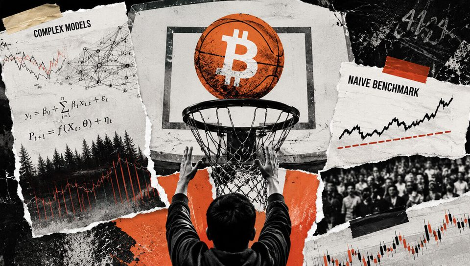
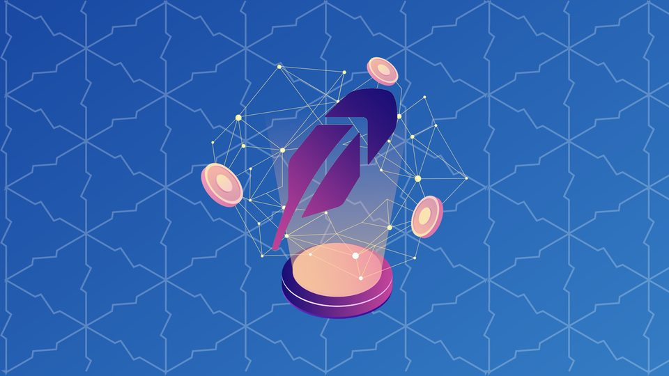

Strategy and Robinhood now lead a $4.5 billion large-cap ETF that was not built for crypto
Their 6.01% combined weight shows how crypto-linked volatility can reach a generalist stock portfolio. The post Strategy and Robinhood now lead a $4.5 billion large-cap ETF that...

Tether-backed Orionx to shut down after audit flags $7M custody gap
Tether-backed Orionx is permanently closing after an audit found more than $7 million in customer assets had moved to wallets outside its custody.

Timing the bitcoin market is exciting but nearly impossible. Here's why
Timing the bitcoin market is exciting but nearly impossible. Here's why
Ancient Bitcoin Wallet That Turned $120 Into $3 Million Wakes Up
At least four more decade-old wallets moved a combined $15.7 million between Aug. 29 and Sept. 4, with one batch of coins sent to Coinbase in a likely sign of a sale.

From power laws to AI networks, why complex Bitcoin price models memorize market noise
Bitcoin price forecasting has accumulated an unusually colorful collection of methods. You have basic scarcity models that convert the halving schedule into a price, and...

Here's what happened in crypto today
Need to know what happened in crypto today? Here is the latest news on daily trends and events impacting Bitcoin price, blockchain, DeFi, Web3 and crypto regulation.

Dollar-backed stablecoins can push local currencies lower, Bank of Korea study finds
Dollar-backed stablecoins can push local currencies lower, Bank of Korea study finds

What Is Robinhood Chain? The Ethereum Layer-2 Network for Tokenized Stocks and Meme Coins
Robinhood Chain is an Ethereum layer-2 network built with Arbitrum technology for tokenized assets, crypto apps, and on-chain financial products.
Users exposed by Trezor breach grows sixfold after supposedly deleted shipping logs are found
The larger disclosure implies roughly 80,689 affected customers, though no combined total or row-level overlap check is public. The post Users exposed by Trezor breach grows...
Poland upholds crypto bill veto as Zondacrypto scandal widens
Polish lawmakers failed to overturn a presidential veto of crypto legislation as the Zondacrypto investigation expands and its Estonian operator enters bankruptcy.
British investor thought he lost $2,000 in bitcoin in 2012. He just recovered $4.5 million
British investor thought he lost $2,000 in bitcoin in 2012. He just recovered $4.5 million

Update Your Browser: Google Patches Chrome Flaw Hackers Were Already Using
The update fixes a high-severity flaw in Chrome’s V8 engine, but Google has not revealed who is using it or whom they targeted.